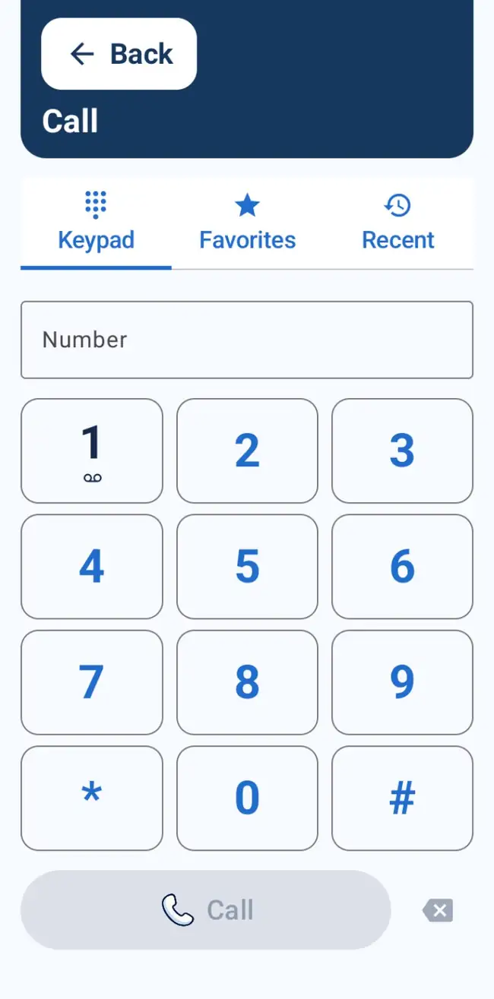

The large home screen shortcuts
Call, Messages, Contacts, Photos, Camera and Emergency are the main shortcuts. Family mode lets you choose which appear and in what order.

Make calls and view recent calls
Open Call, then Keypad, Favorites or Recents. Dial a number or select a contact. When ClikoSpido is the default Phone app and has permissions, Recents shows available call history with names and photos where known. Otherwise it may open the original Phone app.
The large incoming-call controls require the default Phone role. See Getting started.

Call loved ones using their photos
People added in Family mode can appear on the home screen. Tap a loved one's photo to call. Depending on the settings, display one, two or three people per row. Use My loved ones and Add photo to profile to update a contact's picture through Android Contacts.

Messages: keep your usual messaging app
Messages opens your existing SMS/RCS app, such as Google Messages or Samsung Messages. ClikoSpido does not manage your conversations. A contact's message shortcut may prefill the recipient; you still write and send the message yourself.
Photos and camera
Photos opens a compatible gallery app and Camera opens the Android camera. Your photos remain in the phone's usual apps.
Emergency shortcut: contact a loved one
The red Emergency shortcut offers a call to a chosen person or prepares an emergency text message. Set the recipient and text in Family mode → Emergency call settings.
This contacts a loved one; it is not an emergency-services system. Call your local emergency number in a real emergency. The text message is not sent automatically: tap Send in your regular messaging app.
Access other apps
The Apps page shows selected shortcuts. Removing one does not uninstall or block the app elsewhere in Android. Manage the selection under Family mode → Allowed apps. Some options require Premium.